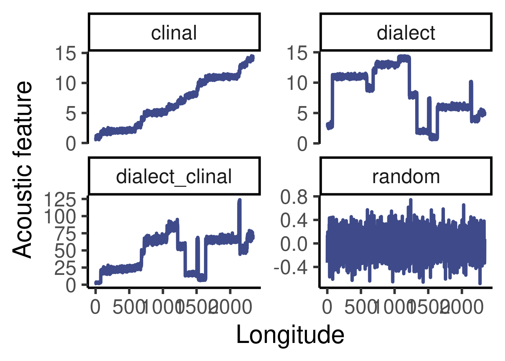
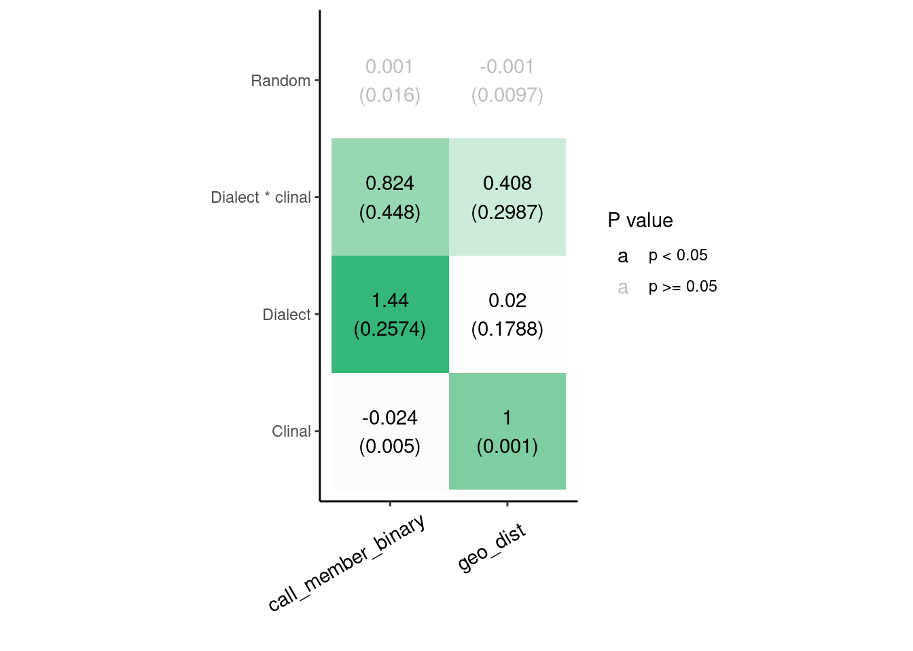

Geographic call variation in yellow-naped amazon across its entire geographic range
Statistical analysis
Source code and data found at https://github.com/maRce10/geographic_call_variation_yellow-naped_amazon
Purpose
- Evaluate call structure variation and ist relation to the geographic distanc
Load packages
Code
# knitr is require for creating html/pdf/word reports formatR is
# used for soft-wrapping code
# install/ load packages
sketchy::load_packages(packages = c("knitr", "formatR", "rprojroot",
"sp", "rgdal", "rgeos", "dplyr", "raster", "dplyr", "spData",
"vegan", "ggplot2", "pbapply", "viridis", "caret", github = "PhenotypeSpace",
"brms", github = "brmsish", "ecodist"))
source("./scripts/MRM2.R")1 Data analysis
1.1 Read data
Code
# Read in and convert the dataframe to Spatial Points object.
sels <- read.csv("./data/raw/ReducedVocalDataYNA.csv", header = TRUE)
sels$Latitude <- as.factor(sels$Latitude)
sels$Longitude <- as.factor(sels$Longitude)
sels$Latitude <- as.numeric(sels$Latitude)
sels$Longitude <- as.numeric(sels$Longitude)
sels <- sels[order(sels$Call_Type), ]
sels$id <- 1
for (i in 2:nrow(sels)) sels$id[i] <- if (sels$Call_Type[i] == sels$Call_Type[i -
1]) sels$id[i - 1] + 1 else 1
sels$selsID <- paste(sels$Call_Type, sels$id, sep = "-")
xc <- readRDS("./data/processed/SPCC2016_2018_2019.RDS")
xc <- as.data.frame(xc)
rownames(xc) <- colnames(xc) <- sels$selsID1.2 Compute geographic distance
Code
# convert the dataframe to Spatial Points object.
mat <- data.frame(lon = sels$Longitude, lat = sels$Latitude)
str(mat)
sp_pts <- SpatialPoints(mat, proj4string = CRS("+proj=longlat +ellps=GRS80 +no_defs +init:epsg31972"))
# Reproject using EPSG codes EPSG codes are specific to regions
# across the world. Codes can be accessed at the following site:
# http://epsg.io or by searching for other EPSG repositories
# online.
epsg <- rgdal::make_EPSG()
epsg[grep("^31972$", epsg$code), ]
sp_pts <- sp::spTransform(sp_pts, CRSobj = CRS(epsg$prj4[grep("^31972$",
epsg$code)]))
bbox(sp_pts)
proj4string(sp_pts)
# Calculate the pairwise distances
geo_dists <- rgeos::gDistance(sp_pts, byid = TRUE)
rownames(geo_dists) <- colnames(geo_dists) <- sels$selsID
str(geo_dists)
saveRDS(geo_dists, "./data/processed/pairwise_distances.RDS")1.3 Mantel correlogram
Average interpolated distances from correlograms at 25, 50, 100, 150, 200 and 250 km
1.3.1 Compute mantel correlogram at different distances
Code
geo_dists <- readRDS("./data/processed/pairwise_distances.RDS")
# View('geo_dists')
# Projection is in meters, so we convert to km
geo_dists <- round(geo_dists/1000)
# When we plot our data, we want the points to be connected in
# one continuous line. In order to achieve that, we identified
# 'breaks' in distances using the following code. Break
# intervals are measured in km, and once a break limit was
# chosen we checked the number of existing 0's by creating a
# table of the classes. If a 0 shows in one of the classes, that
# class has no data and the break number should be altered.
# Although not essential, minimizing zeros maintains continuity
# in the plotted line for the graphic.
geo_vect <- geo_dists[lower.tri(geo_dists)]
geo_vect <- geo_vect[geo_vect != 1 & !is.na(geo_vect)]
# read cross-correlation data
xc <- readRDS("./data/processed/SPCC2016_2018_2019.RDS")
xc_dist <- 1 - xc
dists <- c(25, 50, 100, 150, 200, 250)
mantel_list <- pblapply(dists, cl = 18, function(i) {
classes <- seq(0, max(geo_dists), i)
# length(classes)
# Run a mantel correlation on the data
correl_SPCC <- vegan::mantel.correlog(D.eco = xc_dist, D.geo = geo_dists,
break.pts = classes, cutoff = FALSE, r.type = "pearson", nperm = 1,
mult = "holm", progressive = TRUE)
mantel.res <- correl_SPCC$mantel.res[, 1:3]
mantel.res <- cbind(mantel.res, break.size = i)
return(mantel.res)
})
mantel_list <- lapply(mantel_list, as.data.frame)
# # Save the correlation as an .RDS file so you don't have to
# run it multiple times in the future
saveRDS(mantel_list, paste0("./data/processed/correl_SPCC_several_distances.RDS"))1.3.2 Plot mean correlogram
Code
mantel_list <- readRDS(paste0("./data/processed/correl_SPCC_several_distances.RDS"))
mantels_df <- as.data.frame(do.call(rbind, mantel_list))
combined_dists <- sort(unique(mantels_df$class.index))
# interpolate
interpol_mantel_list <- pblapply(mantel_list, function(x) {
appx <- approx(x = x$class.index[x$n.dist > 0], y = x$Mantel.cor[x$n.dist >
0], xout = combined_dists, method = "linear")
return(appx$y)
})
interpol_mantel_mat <- do.call(cbind, interpol_mantel_list)
interpol_mantel_df <- data.frame(combined_dists, mean.cor = apply(interpol_mantel_mat,
1, mean, na.rm = TRUE), sd.cor = apply(interpol_mantel_mat, 1,
sd, na.rm = TRUE))
ggplot(data = interpol_mantel_df, mapping = aes(x = combined_dists,
y = mean.cor)) + geom_ribbon(data = interpol_mantel_df, aes(ymin = mean.cor -
sd.cor, ymax = mean.cor + sd.cor), fill = "gray", alpha = 0.3) +
geom_point(col = viridis(10, alpha = 0.5)[7], size = 2.5) + geom_line(col = viridis(10,
alpha = 0.5)[7], size = 2) + xlim(c(0, 1000)) + ylim(c(-0.025,
0.2)) + geom_point(size = 3, color = "transparent") + theme_classic(base_size = 20) +
labs(x = "Pairwise geographic distance (km)", y = "Correlation coefficient")2 Simulation
2.1 Simulate data with different patterns of geographic variation in call structure
- 26 localities (10 individuals each) along a longitudinal range
- Simulated patterns following Podos & Warren (2007)
Code
# seed to make it reproducible
set.seed(123)
# number of groups
n_locality <- 20
# number of individuals per group
n_indiv <- 10
# simulate geographic coordinates along a gradient
lon <- rep(1:n_locality, each = n_indiv) + rnorm(n = n_indiv * n_locality,
sd = 0.1)
lat <- rnorm(n = n_indiv * n_locality, sd = 0.1)
# create locality labels
localities <- sample(LETTERS[1:n_locality])
# put all together in a data frame
data <- data.frame(locality = rep(localities, each = n_indiv), lat,
lon, color = viridis(n_locality)[rep(1:n_locality, each = n_indiv)])
# plot localities along longitude
plot(data[, c("lon", "lat")], col = data$color, pch = 20, cex = 1.8,
ylim = range(data$lat) + c(-0.2, 0.2))
text(x = tapply(data$lon, data$locality, mean), y = rep(0.3, n_locality),
labels = localities, cex = 2.5)
abline(v = 1:30 - 0.5)2.2 Simulate acoustic variation:
- Clinal: acoustic structure vector increases with longitude
- Dialect-type: acoustic structure vector similar within a locality but varies randomly between neighnoring localities
- Dialect-clinal: Combined clinal and dialect variation, dialect that vary with a geographic trend
- Random: acoustic structure vector varies randomly between individuals regardless of locality or longitude
Code
# seed to make it reproducible
set.seed(123)
# simulate acoustic structure vector clinal variation
data$clinal <- data$lon + rnorm(n = nrow(data), sd = 0.2)
# dialect type variation
data$dialect <- as.numeric(as.factor(data$locality)) + rnorm(n = n_indiv *
n_locality, sd = 0.2)
data$dialect_clinal <- data$clinal * data$dialect
# random variation
data$random <- rnorm(n = nrow(data), sd = 0.2)
# sort so lines look good in plot
data <- data[order(data$lon), ]
# plot
par(mfrow = c(4, 1))
# random
plot(seq_len(nrow(data)), data$random, type = "l", main = "Random",
xlab = "Longitude", ylab = "Call structure", col = "#3E4A89FF",
lwd = 2)
# dialect
plot(seq_len(nrow(data)), data$dialect, type = "l", main = "Dialect",
xlab = "Longitude", ylab = "Call structure", col = "#3E4A89FF",
lwd = 2)
# dialect clinal
plot(seq_len(nrow(data)), data$dialect_clinal, type = "l", main = "Dialect * Clinal",
xlab = "Longitude", ylab = "Call structure", col = "#3E4A89FF",
lwd = 2)
# clinal
plot(seq_len(nrow(data)), data$clinal, type = "l", main = "Clinal",
xlab = "Longitude", ylab = "Call structure", col = "#3E4A89FF",
lwd = 2)
2.3 Stats on simulated data
- Model:
\[\begin{align*} Acoustic\ dissimilarity &\sim locality + geographic\ distance \end{align*}\] - Response values scaled
Predict acoustic structure based on geographic distance and locality membership using multiple Regression on distance matrices
Data is z-transformed so all predictors have similar variance and effect sizes are comparable.
Variance for each predictor:
Code
# create distance matrices
call_member_binary <- as.dist(PhenotypeSpace::binary_triangular_matrix(group = data$locality))
clinal_dist <- dist(data$clinal)
dialect_dist <- dist(data$dialect)
dialect_clinal_dist <- dist(data$dialect_clinal)
random_dist <- dist(data$random)
geo_dist <- dist(data[, c("lat", "lon")])
# regression models set data format
rect_var <- cbind(clinal_dist = as.dist(scale(clinal_dist)), dialect_dist = as.dist(scale(dialect_dist)),
dialect_clinal_dist = as.dist(scale(dialect_clinal_dist)), random_dist = as.dist(scale(random_dist)),
geo_dist = as.dist(scale(geo_dist)), call_member_binary = as.dist(scale(call_member_binary)))
apply(rect_var, 2, var) clinal_dist dialect_dist dialect_clinal_dist random_dist
0.9892355 1.0066857 1.2567040 0.9765539
geo_dist call_member_binary
0.9883446 0.9045681 2.3.1 Dialect-type variation model
Code
$coef
dialect_dist pval
Int 0.03271626 1.000
geo_dist -0.10646760 0.001
call_member_binary 0.38420019 0.001
$r.squared
R2 pval
0.1185022 0.0010000
$F.test
F F.pval
1337.405 0.001 2.3.2 Clinal variation model
Code
$coef
clinal_dist pval
Int 0.0005692781 0.001
geo_dist 1.0012211111 0.001
call_member_binary -0.0085714758 0.001
$r.squared
R2 pval
0.9962144 0.0010000
$F.test
F F.pval
2618035.995 0.001 2.3.3 Dialect-clinal variation model
Code
$coef
dialect_clinal_dist pval
Int 0.1123161 0.001
geo_dist 0.3961117 0.001
call_member_binary 0.1974639 0.001
$r.squared
R2 pval
0.1901617 0.0010000
$F.test
F F.pval
2336.051 0.001 2.3.4 Random variation model
Code
$coef
random_dist pval
Int 0.008442725 0.039
geo_dist 0.021932428 0.189
call_member_binary -0.018189048 0.039
$r.squared
R2 pval
0.0005393112 0.1530000000
$F.test
F F.pval
5.368232 0.153000 2.3.5 Combined results
Code
mods <- list(mod_clinal = mod_clinal, mod_dialect = mod_dialect, mod_dialect_clinal = mod_dialect_clinal,
mod_random = mod_random)
names(mods) <- c("Clinal", "Dialect", "Dialect * clinal", "Random")
estimates <- do.call(rbind, lapply(seq_along(mods), function(x) {
Y <- data.frame(mods[[x]]$coef[-1, ])
Y$rel_coef <- Y[, 1]/max(Y[, 1])
Y$mod <- names(mods)[x]
Y$predictor <- rownames(Y)
names(Y) <- c("coef", "p", "rel_coef", "model", "predictor")
return(Y)
}))
estimates$rel_coef <- ifelse(estimates$p < 0.05, estimates$rel_coef,
0)
estimates$signif <- ifelse(estimates$p < 0.05, "p < 0.05", "p >= 0.05")
ggplot(estimates, aes(x = predictor, y = model, fill = rel_coef)) +
geom_tile() + coord_equal() + scale_fill_gradient2(low = viridis(10)[3],
high = viridis(10)[7], guide = "none") + geom_text(aes(label = round(coef,
3), color = signif)) + scale_color_manual(values = c("black",
"gray")) + labs(x = "", y = "", color = "P value") + theme_classic() +
theme(axis.text.x = element_text(color = "black", size = 11, angle = 30,
vjust = 0.8, hjust = 0.8))2.4 Replicate simulation 100 times
Code
rep_models <- replicate(100, expr = {
# number of groups
n_locality <- 20
# number of individuals per group
n_indiv <- 10
# simulate geographic coordinates along a gradient
lon <- rep(1:n_locality, each = n_indiv) + rnorm(n = n_indiv *
n_locality, sd = 0.1)
lat <- rnorm(n = n_indiv * n_locality, sd = 0.1)
# create locality labels
localities <- sample(LETTERS[1:n_locality])
# put all together in a data frame
data <- data.frame(locality = rep(localities, each = n_indiv),
lat, lon, color = viridis(n_locality)[rep(1:n_locality, each = n_indiv)])
# simulate acoustic structure vector clinal variation
data$clinal <- data$lon + rnorm(n = nrow(data), sd = 0.2)
# dialect type variation
data$dialect <- as.numeric(as.factor(data$locality)) + rnorm(n = n_indiv *
n_locality, sd = 0.2)
data$dialect_clinal <- data$clinal * data$dialect
# random variation
data$random <- rnorm(n = nrow(data), sd = 0.2)
# sort so lines look good in plot
data <- data[order(data$lon), ]
# create distance matrices
call_member_binary <- as.dist(PhenotypeSpace::binary_triangular_matrix(group = data$locality))
clinal_dist <- dist(data$clinal)
dialect_dist <- dist(data$dialect)
dialect_clinal_dist <- dist(data$dialect_clinal)
random_dist <- dist(data$random)
geo_dist <- dist(data[, c("lat", "lon")])
# regression models set data format
rect_var <- cbind(clinal_dist = as.dist(scale(clinal_dist)), dialect_dist = as.dist(scale(dialect_dist)),
dialect_clinal_dist = as.dist(scale(dialect_clinal_dist)),
random_dist = as.dist(scale(random_dist)), geo_dist = as.dist(scale(geo_dist)),
call_member_binary = as.dist(scale(call_member_binary)))
# model predicting dialect variation
(mod_dialect <- MRM2(formula = dialect_dist ~ geo_dist + call_member_binary,
nperm = 1000, mat = rect_var[, c("dialect_dist", "geo_dist",
"call_member_binary")]))
# model predicting clinal variation
(mod_clinal <- MRM2(formula = clinal_dist ~ geo_dist + call_member_binary,
nperm = 1000, mat = rect_var[, c("clinal_dist", "geo_dist",
"call_member_binary")]))
# model predicting clinal variation
(mod_dialect_clinal <- MRM2(formula = dialect_clinal_dist ~ geo_dist +
call_member_binary, nperm = 1000, mat = rect_var[, c("dialect_clinal_dist",
"geo_dist", "call_member_binary")]))
# model predicting random variation
(mod_random <- MRM2(formula = random_dist ~ geo_dist + call_member_binary,
nperm = 1000, mat = rect_var[, c("random_dist", "geo_dist",
"call_member_binary")]))
mods <- list(mod_clinal = mod_clinal, mod_dialect = mod_dialect,
mod_dialect_clinal = mod_dialect_clinal, mod_random = mod_random)
names(mods) <- c("Clinal", "Dialect", "Dialect * clinal", "Random")
estimates <- do.call(rbind, lapply(seq_along(mods), function(x) {
Y <- data.frame(mods[[x]]$coef[-1, ])
Y$rel_coef <- Y[, 1]/max(Y[, 1])
Y$mod <- names(mods)[x]
Y$predictor <- rownames(Y)
names(Y) <- c("coef", "p", "rel_coef", "model", "predictor")
return(Y)
}))
estimates
}, simplify = FALSE)
coeffs <- do.call(cbind, lapply(rep_models, function(x) x[, 1]))
ps <- do.call(cbind, lapply(rep_models, function(x) x[, 2]))
estimates <- rep_models[[1]]
estimates$coef <- rowMeans(coeffs)
estimates$p <- rowMeans(ps)
estimates$rel_coef <- rowMeans(ps)
estimates$rel_coef <- estimates[, 1]/max(estimates[, 1])
estimates$rel_coef <- ifelse(estimates$p < 0.05, estimates$rel_coef,
0)
estimates$signif <- ifelse(estimates$p < 0.05, "p < 0.05", "p >= 0.05")
saveRDS(estimates, "./data/processed/estimates_for_replicated_simulation_dialects.RDS")Code
estimates <- readRDS("./data/processed/estimates_for_replicated_simulation_dialects.RDS")
ggplot(estimates, aes(x = predictor, y = model, fill = rel_coef)) +
geom_tile() + coord_equal() + scale_fill_gradient2(low = viridis(10)[3],
high = viridis(10)[7], guide = "none") + geom_text(aes(label = round(coef,
3), color = signif)) + scale_color_manual(values = c("black",
"gray")) + labs(x = "", y = "", color = "P value") + theme_classic() +
theme(axis.text.x = element_text(color = "black", size = 11, angle = 30,
vjust = 0.8, hjust = 0.8))
Takeaways
- Call membership has a stronger effect in dialect-type variation
- Geographic distance has a stronger effect in clinal variation
- Similar effect sizes when both clinal and dialect variation present
3 Real data analysis
3.1 Association between distance call similarity, geographic distance and dialect membership
- Using the function ecodist::MRM() https://search.r-project.org/CRAN/refmans/ecodist/html/MRM.html
- Dialect membership expressed as binary matrix (0 = same dialect, 1 = different dialect)
- Geographic distance expressed in 100 km units
- Effect size expressed as acoustic similarity (changes in cross-correlation coefficients)
Code
geo_dists <- readRDS("~/Dropbox/Projects/geographic_call_variation_yellow-naped_amazon/data/processed/pairwise_distances.RDS")
sels <- read.csv("~/Dropbox/Projects/geographic_call_variation_yellow-naped_amazon/data/raw/ReducedVocalDataYNA.csv",
header = TRUE)
xc <- readRDS("~/Dropbox/Projects/geographic_call_variation_yellow-naped_amazon/data/processed/SPCC2016_2018_2019.RDS")
geo_dists <- as.dist(geo_dists)
call_member_binary <- as.dist(PhenotypeSpace::binary_triangular_matrix(group = sels$Call_Type))
rect_var <- cbind(acous_sim = as.dist(scale(1 - xc)), geo_dists = as.dist(scale(geo_dists)),
call_member_binary = as.dist(scale(call_member_binary)))
colnames(rect_var) <- c("acous_distance", "geo_dists", "call_member_binary")
# mod <- MRM2(formula = acous_distance ~ geo_dists +
# call_member_binary, nperm = 10000, mat = rect_var)
# saveRDS(mod,
# './data/processed/matrix_correlation_distance_vs_acoustic
# similarity.RDS')
rect_var_df <- as.data.frame(rect_var)
rect_var_df$membership <- ifelse(call_member_binary == 0, "same",
"different")
gg_acous <- ggplot(rect_var_df, aes(x = geo_dists, y = acous_distance,
color = membership)) + geom_point() + scale_color_viridis_d(alpha = 0.3,
begin = 0.2, end = 0.8) + geom_smooth(method = "lm") + theme_classic()
gg_acous$coef
acous_distance pval
Int 0.001520839 1.0000
geo_dists -0.011493401 0.0027
call_member_binary 0.246687375 0.0001
$r.squared
R2 pval
0.06136759 0.00010000
$F.test
F F.pval
89307.1617 0.0001 Code
# # Read in .RDS file if you've already saved one
correl <- readRDS("./data/processed/correl_SPCC_100km.RDS")
str(correl)
# Create a dataframe from the mantel correlation matrix, remove
# any existing NA's in the p-values. Create a vector of
# significance values for the plot and match with appropriate
# p-values in the dataframe.
df1 <- as.data.frame(correl$mantel.res)
df1 <- df1[!is.na(df1$`Pr(corrected)`), ]
sig <- ifelse(df1$`Pr(corrected)` <= 0.05, "sig", "non-sig")
p_val <- df1$`Pr(corrected)`
distance <- df1$class.index
corr <- df1$Mantel.cor
sig_cat <- sig
sig_cat[sig_cat == "sig" & corr < 0] <- "Lower"
sig_cat[sig_cat == "sig" & corr > 0] <- "Higher"
sig_cat[sig_cat == "non-sig"] <- "Neutral"
unique(sig_cat)
corr_df <- data.frame(distance = distance, corr = corr, p_val = p_val,
sig = sig, sig_cat = sig_cat)
corr_df$sig <- factor(corr_df$sig, levels = c("sig", "non-sig"))
corr_df$sig_cat <- factor(corr_df$sig_cat, levels = c("Lower", "Neutral",
"Higher"))
# Adjust the x- and y-axis scales using ggplot: c(0, 15)
# install.packages('scales') install.packages('ggplot2')
scales_x <- list(Central_America = scale_x_continuous(limits = c(0,
15), breaks = seq(0, 15, 5), labels = seq(0, 15, 5)))
scales_y <- list(SPCC = scale_y_continuous(limits = c(-0.5, 0.5)))
str(corr_df)
# Plot the spatial autocorrelogram using ggplot
# jpeg('Spatial_auto100km.tiff', units='in', width=10,
# height=10, res=300) this never works
ggplot(corr_df, aes(x = distance, y = corr)) + geom_hline(yintercept = 0,
linetype = "dotted", size = 0.5) + geom_point(aes(color = sig_cat,
fill = sig_cat), size = 4, shape = 21) + scale_color_manual(values = c(alpha("darkblue",
0.6), gray.colors(12)[6], "red")) + scale_fill_manual(values = c(alpha("darkblue",
0.6), gray.colors(12)[6], "red")) + geom_line(colour = "black",
size = 0.25) + theme_bw() + theme(panel.background = element_rect(color = "white",
fill = "white"), panel.grid.major.x = element_line(size = 0.1,
color = "black"), axis.line = element_line(color = "black", size = 0.35),
axis.text.x = element_text(size = 15, angle = 0, face = "bold"),
axis.text.y = element_text(size = 15, angle = 0, face = "bold"),
axis.title = element_text(size = 20), axis.ticks = element_line(size = 0.15),
legend.text = element_text(hjust = 0, size = 18), legend.title = element_text(hjust = 0,
size = 18), panel.grid.major.y = element_blank(), panel.grid.minor.y = element_blank(),
legend.position = "top", strip.text = element_text(size = 10)) +
xlab("Pairwise Geographic Distance (km)") + ylab("Mantel Spatial Correlation of Acoustic Similarity") +
guides(fill = guide_legend(title = "Spatial Correlation Values"),
color = guide_legend(title = "Spatial Correlation Values"))
dev.off()Code
count_call <- table(sels$Call_Type)
sels <- sels[order(match(sels$Call_Type, names(count_call)[order(count_call)])),
]
combs <- t(combn(sels$selsID, m = 2))
# combs <- combs[sapply(strsplit(combs[,1], '-'), '[', 1) !=
# sapply(strsplit(combs[,2], '-'), '[', 1), ]
nrow(combs)
combs <- combs[!duplicated(combs[, 2]), ]
# diff_combs <- diff_combs[!duplicated(diff_combs[,2]), ]
# keep <- TRUE for(x in 2:nrow(combs)){ prev <-
# unique(c(combs[seq_len(x - 1), , drop = FALSE][keep, ]))
# keep[x] <- !any(combs[x, ] %in% prev) } combs <- combs[keep, ]
combs <- data.frame(combs)
geo_dists <- readRDS("./data/processed/pairwise_distances.RDS")
combs$geo_dist <- sapply(1:nrow(combs), function(x) {
geo_dists[rownames(geo_dists) == combs[x, 1], colnames(geo_dists) ==
combs[x, 2]]
})
combs$call_dist <- sapply(1:nrow(combs), function(x) {
xc[rownames(xc) == combs[x, 1], colnames(xc) == combs[x, 2]]
})
range(combs$call_dist)
combs$call_dist <- 1 - combs$call_dist
names(combs) <- c("call.type1", "call.type2", "geo.dist", "acoustic.dist")Takeaways
- Changes in acoustic similarity largely due to dialects: calls from the same dialect are way more similar
- There is also a small positive effect of geoprahic distance on acoustic similarity: calls further away are slightly more similar
Session information
R version 4.1.0 (2021-05-18)
Platform: x86_64-pc-linux-gnu (64-bit)
Running under: Ubuntu 20.04.2 LTS
Matrix products: default
BLAS: /usr/lib/x86_64-linux-gnu/atlas/libblas.so.3.10.3
LAPACK: /usr/lib/x86_64-linux-gnu/atlas/liblapack.so.3.10.3
locale:
[1] LC_CTYPE=pt_BR.UTF-8 LC_NUMERIC=C
[3] LC_TIME=es_CR.UTF-8 LC_COLLATE=pt_BR.UTF-8
[5] LC_MONETARY=es_CR.UTF-8 LC_MESSAGES=pt_BR.UTF-8
[7] LC_PAPER=es_CR.UTF-8 LC_NAME=C
[9] LC_ADDRESS=C LC_TELEPHONE=C
[11] LC_MEASUREMENT=es_CR.UTF-8 LC_IDENTIFICATION=C
attached base packages:
[1] stats graphics grDevices utils datasets methods base
other attached packages:
[1] ecodist_2.0.9 brmsish_1.0.0 brms_2.18.0
[4] Rcpp_1.0.11 PhenotypeSpace_0.1.0 warbleR_1.1.28
[7] NatureSounds_1.0.4 seewave_2.2.0 tuneR_1.4.4
[10] caret_6.0-88 viridis_0.6.3 viridisLite_0.4.2
[13] pbapply_1.7-2 ggplot2_3.4.2 vegan_2.5-7
[16] lattice_0.21-8 permute_0.9-5 spData_2.2.1
[19] raster_3.4-13 dplyr_1.0.10 rgeos_0.5-5
[22] rgdal_1.5-23 sp_1.5-1 rprojroot_2.0.3
[25] formatR_1.11 knitr_1.43
loaded via a namespace (and not attached):
[1] utf8_1.2.3 tidyselect_1.2.0 lme4_1.1-27.1
[4] fftw_1.0-7 htmlwidgets_1.5.4 grid_4.1.0
[7] pROC_1.17.0.1 munsell_0.5.0 ragg_1.1.3
[10] codetools_0.2-18 DT_0.26 miniUI_0.1.1.1
[13] withr_2.5.0 Brobdingnag_1.2-9 colorspace_2.1-0
[16] rstudioapi_0.14 stats4_4.1.0 dtw_1.23-1
[19] tensor_1.5 bayesplot_1.9.0 labeling_0.4.2
[22] emmeans_1.8.1-1 rstan_2.21.7 polyclip_1.10-0
[25] farver_2.1.1 bridgesampling_1.1-2 coda_0.19-4
[28] vctrs_0.6.3 generics_0.1.3 TH.data_1.1-0
[31] ipred_0.9-11 xfun_0.39 R6_2.5.1
[34] markdown_1.3 gamm4_0.2-6 projpred_2.0.2
[37] bitops_1.0-7 spatstat.utils_2.2-0 assertthat_0.2.1
[40] promises_1.2.0.1 scales_1.2.1 multcomp_1.4-17
[43] nnet_7.3-16 gtable_0.3.3 processx_3.8.2
[46] goftest_1.2-2 xaringanExtra_0.7.0 sandwich_3.0-1
[49] timeDate_3043.102 rlang_1.1.1 systemfonts_1.0.4
[52] splines_4.1.0 ModelMetrics_1.2.2.2 spatstat.geom_2.2-2
[55] sketchy_1.0.2 checkmate_2.2.0 inline_0.3.19
[58] yaml_2.3.7 reshape2_1.4.4 abind_1.4-5
[61] threejs_0.3.3 crosstalk_1.2.0 backports_1.4.1
[64] httpuv_1.6.6 tensorA_0.36.2 tools_4.1.0
[67] lava_1.6.9 kableExtra_1.3.4 ellipsis_0.3.2
[70] spatstat.core_2.3-0 posterior_1.3.1 proxy_0.4-27
[73] ggridges_0.5.4 plyr_1.8.7 base64enc_0.1-3
[76] purrr_1.0.0 RCurl_1.98-1.12 ps_1.7.5
[79] prettyunits_1.1.1 rpart_4.1-15 deldir_0.2-10
[82] cowplot_1.1.1 zoo_1.8-11 cluster_2.1.2
[85] magrittr_2.0.3 data.table_1.14.0 ggdist_3.2.0
[88] colourpicker_1.2.0 mvtnorm_1.1-3 packrat_0.9.0
[91] matrixStats_0.62.0 shinyjs_2.1.0 mime_0.12
[94] evaluate_0.21 xtable_1.8-4 shinystan_2.6.0
[97] gridExtra_2.3 rstantools_2.2.0 testthat_3.1.9
[100] compiler_4.1.0 tibble_3.2.1 crayon_1.5.2
[103] minqa_1.2.4 StanHeaders_2.21.0-7 htmltools_0.5.5
[106] mgcv_1.8-42 later_1.3.0 RcppParallel_5.1.5
[109] lubridate_1.7.10 DBI_1.1.3 MASS_7.3-60
[112] boot_1.3-28 Matrix_1.5-4.1 brio_1.1.3
[115] cli_3.6.1 parallel_4.1.0 gower_0.2.2
[118] igraph_1.5.0 pkgconfig_2.0.3 signal_0.7-7
[121] spatstat.sparse_2.0-0 recipes_0.1.16 xml2_1.3.3
[124] foreach_1.5.1 svglite_2.1.0 dygraphs_1.1.1.6
[127] webshot_0.5.4 estimability_1.4.1 prodlim_2019.11.13
[130] rvest_1.0.3 stringr_1.5.0 distributional_0.3.1
[133] callr_3.7.3 digest_0.6.32 spatstat.data_2.1-0
[136] rmarkdown_2.23 shiny_1.7.3 gtools_3.9.3
[139] nloptr_1.2.2.2 rjson_0.2.21 lifecycle_1.0.3
[142] nlme_3.1-162 jsonlite_1.8.7 fansi_1.0.4
[145] pillar_1.9.0 loo_2.4.1.9000 httr_1.4.4
[148] fastmap_1.1.1 pkgbuild_1.4.0 survival_3.2-11
[151] glue_1.6.2 xts_0.12.2 remotes_2.4.2
[154] shinythemes_1.2.0 iterators_1.0.13 class_7.3-22
[157] stringi_1.7.12 textshaping_0.3.5 ape_5.6-2